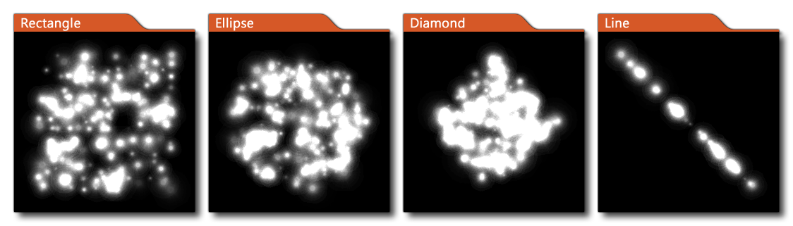

Establecer la región del emisor Establecer la región del emisor
Establecer la región del emisor Establecer la región del emisor Esta acción se usa para establecer la región y la forma de un emisor dentro de un sistema de partículas. Suministra la ID del sistema de partículas al que pertenece el emisor (como lo devuelve la acción Crear sistema de partículas ) y luego la ID del emisor real (como lo devuelve la acción Crear emisor de partículas ), y luego le da una forma para que el emisor tome dentro del dados los valores del cuadro delimitador. Las posibles formas de emisor son: 
Para definir sus formas, da las coordenadas para un "cuadro delimitador" en el que se colocará la forma dada (en el caso de formas rectangulares, elipse y romboidal) o las coordenadas primera y segunda para los puntos de inicio y finalización (en el caso de una línea). Todas las partículas que se rompen o transmiten desde el emisor se crearán dentro de los límites de la forma dentro de este cuadro delimitador. También puede establecer la distribución de las partículas con la opción de:
- Lineal: las partículas se crearán en cualquier lugar al azar dentro de la forma dada.
- Gaussiano: las partículas se crearán predominantemente en el medio de la forma con menos a lo largo de los bordes.
- Gaussiano inverso: las partículas se crearán predominantemente a lo largo de los bordes de la forma con menos en el medio.
Argumento Descripción System La identificación única del sistema al que pertenece el emisor Emitter La identificación única del emisor para establecer la forma de Shape La forma de partícula que se va a utilizar Distribution La distribución de partículas dentro de la forma dada Left La posición del lado izquierdo del cuadro delimitador de formas (en píxeles) Top La posición de la parte superior del cuadro delimitador de la forma (en píxeles) Right La posición del lado derecho del cuadro delimitador de la forma (en píxeles) Bottom La posición de la parte inferior del cuadro delimitador de la forma (en píxeles)

El código de bloque de acción anterior creará un emisor de partículas, establecerá su región y luego lo configurará para emitir una corriente de partículas.